HTML은 하이퍼텍스트 마크업 랭귀지(HyperText Markup Language)의 줄임말로 하이퍼텍스트를 마크업 하는 언어이다. 하이퍼 텍스트는 현재 웹 페이지에서 다른 웹 페이지로 이동할 수 있는 텍스트의 기능을 말하고 '마크업'이란 태그(tag)를 사용해 어느 영역이 제목, 본문, 이미지 인지를 표시하는 것을 말한다.
HTML5이전에 사용하던 HTML4에 이어 다양한 기능들이 추가되었기 때문에 '4'다음으로 '5'를 붙여 HTML5로 부른다. 현재는 대부분의 웹 브라우저에서 HTML5를 지원하기 때문에 숫자를 빼고 'HTML'이라고 부르기도 한다.
기본 구조(뼈대)에 해당함
브라우저 종류 및 버전에 따른 기능 차이에 대하여 호환이 가능하도록 제시된 표준으로, 다른 기종 혹은 플랫폼에 따라 달리 구현되는 기술을 동일하게 구현함과 동시에 어느 한쪽에 최적화되어 치우치지 않도록 공통요소를 사용하여 웹 페이지를 제작하는 기법을 의미한다. 웹 표준을 개발하는 국제 컨소시엄인 W3C(World Wide Web Consortium)가 권고한 표준안에 따라 웹사이트를 작성할 때 이용하는 HTML, CSS, JavaScript 등에 대한 규정을 담고 있으며 웹 표준의 궁극적인 목적은 웹사이트에 접속한 사용자가 어떠한 운영체제나 브라우저를 사용하더라도 동일한 결과를 보이게 하는 것이다.
마크업 검사 : https://validator.w3.org/
웹 호환성은 표준 웹 기술을 사용하여 운영체제, 브라우저 등 어느 한쪽으로 최적화되거나 종속되지 않도록 공통 요소를 사용하여 웹 페이지를 제작하는 기법으로 웹 사이트 사용 시 운영체제 및 브라우저 간 동일한 결과가 나오도록 의미하는 웹 상호운용성의 개념에 웹 표준의 준수를 포함하는 개념이다.
웹 접근성을 준수하면? 장애인, 고령자 등을 포함한 모든 사람들이 웹에서 원하는 정보들을 자유롭게 접근 하고 이용할 수 있다. '08년 4월 11일부터 시행된 ‘장애인차별금지 및 권리구제 등에 관한 법률’ 및 동법 시행령 등 관련 규정을 준수할 수 있게 된다. 주변 환경(주변소음, 밝은 태양광, 작은 화면 등)이나, 단말기 종류(스마트폰, PC/노트북, 패드)에 상관 없이 사용 가능한 웹을 제공하고 웹 페이지 구성이 논리적으로 최적화되어, 디자인 및 설계의 효율성 제고는 물론 개발/유지보수/개편 비용 절감 효과를 가져온다는 장점이 있다.
| 구분 | 목적 | 준수 내용 | 차이 |
|---|---|---|---|
| 웹 표준 (Web Standards) |
웹의 사용성 및 접근성 보장 |
HTML, CSS 등에 대한 W3C규격(문법) 준수 등 - HTML, CSS, Javascript 등 구조와 표현, 동작 분리 권고 |
웹의 내용, 표현, 행동에 관련된 기술표준 |
| 웹 호환성 (Cross Browsing) |
웹 브라우저 버전,종류와 관계없는 웹사이트 접근 |
웹 표준 준수를 통한 브라우저 호환성 확보 - HTML, CSS 문법 준수 - 동작, 레이아웃, 플러그인 호환성 |
웹 표준을 공통으로 포함 |
| 웹 접근성 (Web Accessibility) |
인적, 환경적 요인에 제약없는 웹 정보 접근 |
W3C 웹 접근성 이니셔티브(WAI) 한국형 웹 콘텐츠 접근성 지침2.0 - 인식의 용이성, 운용의 용이성, 이해의 용이성, 견고성 |
| 태그 |
태그는 시작 태그와 종료 태그로 나눌 수 있으며 "<"와 ">" 로 둘러싸여 있다. 기본 형식은 시작 태그의 경우 <tag>의 형태를 가지며, 종료 태그의 경우에는 </tag> 형태를 가진다.
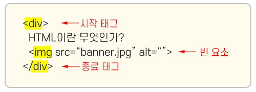
|
|---|---|
| 콘텐츠(내용) | 시작 태그와 종료 태그 사이에 작성하여 실제 브라우저 상에서 보여지는 부분 |
| 요소 |
- 웹페이지를 구성하는 가장 기본적인 단위 - 시작 태그와 내용(content), 종료 태그 모두를 포함하여 ‘요소(element)’라고 부른다. - 태그는 기본적으로 시작 태그와 종료 태그 2개가 1쌍으로 이루어져 있으며, 태그 사이에 콘텐츠가 작성됨. - 일부 태그의 경우, 용을 담지 않고 종료 태그가 필요 없는 HTML 태그가 있는데 이러한 태그를 ‘빈 요소(empty element), 빈 요소 태그’라고 부른다. 빈 요소 태그: <br>, <img>,<hr> ,<input>,<source> |
| 속성 |
- 속성은 태그에 추가로 정보를 제공하거나 태그의 동작이나 표현을 제어할 수 있는 설정값을 의미한다. - 속성값은 홑따옴표(')와 쌍따옴표(")로 감싸 표현하며 시작태그에 작성한다. - 시작 태그는 필요에 따라 정해진 속성을 가질 수 있으며, 사용할 수 있는 속성은 태그마다 다를 수 있다. - 시작 태그 내에 여러 개의 속성을 선언할 경우 속성과 속성은 공백으로 구분하여 지정해야 한다. - 속성에는 값을 가지지 않는 논리형 속성도 있다. 논리형 속성: 선택 사항이 하나 밖에 없는 속성
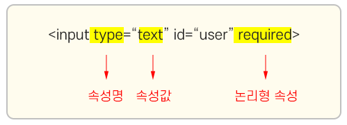
|
| DTD 선언 |
1. 마크업 문서를 작성할 때는 반드시 문서의 첫머리에 문서형 정의(DTD: Document Type Definition)를 선언해야 한다. 2. <!DOCTYPE html> 는 현재 문서가 HTML5 문서임을 명시한다. |
||||||||
|---|---|---|---|---|---|---|---|---|---|
| <html lang="ko"> |
1. HTML 문서의 시작을 알리는 루트(root) 요소를 정의. 2. 모든 웹 페이지의 콘텐츠는 <html> 태그와 </html> 태그 안에 선언되어야 함. 3. 시작 태그인 <html>에 lang 속성을 사용하여 기본 언어를 지정할 수 있다. *lang: 문서의 주요 언어를 표기하기 위해 추가하는 속성 (한국어: "ko", 영어: "en", 일본어: "ja", 중국어: "zh" 등) |
||||||||
| <head> |
- 브라우저에게 HTML 문서의 정보(metadata)를 정의. - 웹 브라우저에는 직접적으로 표현되지 않는 정보 - 이러한 정보들은 <title>, <style> , <meta> , <link>, <script> 태그 등을 이용하여 표현할 수 있다. |
||||||||
| 메타(meta)태그 | 서버와 웹브라우저 사이에서 주고받는 정보를 정의해주는 태그로 웹 페이지에 대한 정보를 제공하는 기능을 함 | ||||||||
| 인코딩 방식 설정 |
<meta charset="utf-8">
문서의 인코딩 방식을 설정해주는 문자셋(character set) 설정. 여러 나라의 언어를 컴퓨터가 해석하기 위해서는 각 문자에 맞는 인코딩 방식을 사용해야 한다. <meta> 태그의 문자셋 속성을 이용해 인코딩 방식을 utf-8 방식으로 설정하면, 한글을 비롯한 다양한 언어를 표시할 수 있다. |
||||||||
| IE 호환성 보기 모드 |
<http-equiv="X-UA-Compatible" content="IE=edge"> - 인터넷 익스플로러 사용자까지 고려해야 하는 웹사이트를 제작할 경우 meta 태그를 사용해 현재 웹 문서를 최신표준모드로 해석하라고 선언. |
||||||||
| 뷰포트 설정 |
<meta name="viewport" content="width=device-width, initial-scale=1.0"> *뷰포트(viewport)는 현재 화면에 보여지고 있는 영역, 즉 웹 페이지에서 사용자의 보이는 영역(visible area)을 말한다. - 반응형 사이트 제작 시 필수로 선언되어야 함. - width=device-width : 뷰포트의 너비를 기기의 화면 너비와 동일하게 설정 - initial-scale=1.0: 페이지 로딩 시 초기 줌 레벨을 1.0으로 설정합니다. 이는 페이지가 별도의 확대/축소 없이 원래 크기대로 표시됨을 의미함. - minimum-scale=1.0: 사용자가 페이지를 축소할 수 있는 최소 줌 레벨을 1.0으로 설정 - maximum-scale=1.0: 사용자가 페이지를 확대할 수 있는 최대 줌 레벨을 1.0으로 설정 - user-scalable=no: 사용자가 페이지를 확대/축소하는 것을 금지 (아이폰 os의 경우 적용안됨(iOS 10 이후부터)) |
||||||||
| 검색엔진 고려하기 |
1. 웹사이트의 키워드나 간단한 설명, 제작자 등의 정보를 지정할 수 있다. 2. 검색엔진에서 사이트를 검색할 때 참조하는 정보. - <meta name="keywords" content="HTML5, CSS3, JavaScript"> (해당 문서의 키워드) - <meta name="description" content="HTML5파헤치기"> (해당 문서의 설명) 일반적으로 영문 160자, 한글 80자 이내로 작성하는 것이 권장 - <meta name="author" content="juha Lee"> (해당 문서의 소유자 또는 제작자) |
||||||||
| 오픈 그래프(Open Graph) |
메타태그의 property을 사용하여 소셜미디어(예:카카오톡, 페이스북 등) 공유 미리보기를 설정하는 데 사용된다.
1. 소셜 미디어에 웹페이지 링크를 공유했을 때 표시될 썸네일 이미지를 지정
<meta property="og:image" content="../img/img_og.jpg">
2. 소셜 미디어에 웹페이지 링크를 공유했을 때 표시될 웹페이지의 고유한 정식 URL을 정의
<meta property="og:url" content="https://happyanna05.github.io/web-publishing">
3. 소셜 미디어에 웹페이지 링크를 공유했을 때 표시될 제목을 지정
<meta property="og:title" content="JUHA_edu">
4. 소셜 미디어에 웹페이지 링크를 공유했을 때 표시될 설명 또는 요약 문구를 정의
<meta property="og:description" content="웹퍼블리싱 공부하기"> |
||||||||
| iOS 사파리 브라우저 - 숫자 자동 전화번호인식 방지 |
전화기능 태그를 적용하지 않았음에도 숫자를 자동으로 전화번호로 인식하여 전화걸기 실행하는 것을 방지하기 위함. |
||||||||
| 그 외의 대표적인 상황 |
이메일 주소: 자동으로 메일 앱 실행 링크 생성 주소: 지도 앱으로 연결
|
||||||||
| <title> |
HTML 문서의 제목(title)을 정의. 55~60자 이내(국문:30자 이내)로 작성하는 것을 권장 - 웹 브라우저의 탭(tab)에 표시 - 웹 브라우저의 즐겨찾기(favorites)에 추가할 때 즐겨찾기의 제목 - 검색 엔진의 결과 페이지에 제목으로 표시됨. |
||||||||
| <body> | HTML 문서의 본문 부분에 해당하며, 웹브라우저 화면에 나타나는 모든 콘텐츠는 <body> 태그와 </body> 태그 사이에 선언해야 한다. | ||||||||
HTML의 모든 요소는 해당 요소(태그)가 웹 브라우저에 어떻게 보이는가를 결정짓는 display속성을 가지고 있다.
대부분의 HTML 요소는 이러한 display 속성값으로 크게 블록 레벨(Block Level)과 인라인 레벨(Inline Level) 두 가지 값 중의 하나를 가진다.
| 블록 레벨(Block Level) 요소 |
- 부모 요소의 가로 영역에 맞게 꽉 채워져 표현되는 요소. (width:100%) - 양옆으로 다른 요소가 배치되지 않게 박스를 생성하므로 박스의 위 아래로 줄 바꿈이 생기게 된다. - 블록 레벨 요소는 일반적인 모든 요소(블록, 인라인 레벨 등)를 포함할 수 있다. - display 속성값이 블록(block)인 요소는 언제나 새로운 라인(line)에서 시작하며, 해당 라인의 모든 너비를 차지한다. - 블록 레벨 요소의 가로 길이는 화면의 가로 길이와 같지만, 세로 길이는 콘텐츠의 세로 길이와 동일하다. |
|---|---|
| p, h1~h6, ul, ol, li, dl, dt, dd, div, figure, section, header, nav, main, footer, aside, article, pre, option, optgroup, legend, blockquote, form, hr, table, fieldset, address...등 | |
| 인라인 레벨(Inline Level) 요소 |
- 하나의 라인 안에서 태그에 포함된 콘텐츠의 크기만큼만 공간을 차지하는 요소. - 라인의 흐름을 끊지 않고 요소 앞,뒤로도 줄 바꿈이 되지 않아 다른 인라인 요소들이 자리할 수 있다. - 인라인 레벨 요소는 블록 레벨 요소의 자식으로 분류되기 때문에 자손으로 블록 레벨 요소를 가질 수 없다. 즉, 인라인 레벨 요소는 블록 레벨 요소를 포함할 수 없다. - 한 가지 예외 경우: <a>는 인라인 레벨 요소지만 자손으로 블록 레벨 요소를 가질 수 있다. ※유념해야할 사항 1. 상, 하단 외부 여백(margin-top, margin-bottom) 속성을 정의해도 적용되지 않는다.상, 하 여백은 margin이 아니라 line-height 속성에 의해 발생된다. 2. 너비(width)와 높이(height) 속성이 적용되지 않는다. (예외:img, video 태그) 인라인 요소의 너비 및 높이는 태그가 품고 있는 내부 요소 부피에 맞춰진다. 인라인 속성을 가진 태그끼리 연속으로 사용되는 경우 최소한의 간격을 유지하기 위해 좌, 우에 약 4~5px 가량의 외부 여백이 자동으로 발생한다. |
| a, img, object, br, sub, sup, span, small, b ,strong, em, q, textarea, label...등 | |
| 인라인 블록(Inline Block) 레벨 요소 | 블록 속성과 인라인 속성 일부를 조금씩 포함하고 있다. |
| input, select, button | |
| 제목(Heading) |
1. HTML은 제목을 표현할 수 있는 다양한 크기의 <h>태그를 제공. 2. <h1> ~</h6> 까지 있으며 텍스트 사이즈는 숫자가 1일 때 가장 크고 6일 때 가장 작다. 3. h태그는 제목의 표현이라는 기능 외에도 또 다른 중요한 역할을 하고 있다. 4. 여러 검색엔진은 각 웹 사이트의 내용을 바로 이 h태그를 이용하여 키워드를 수집하고, 그 내용을 파악한다. 따라서 HTML 문서에 포함되는 제목은 h태그로 작성해야만 검색엔진에 의해 제대로 검색될 확률을 높일 수 있다. 5. 자식으로 블록 요소를 포함할 수 없다. |
|---|---|
| 단락(Paragraph) |
단락(문단)이란 글을 내용상 끊어서 구분한 하나하나의 토막을 뜻하는데, 이를 표시할 때는 주로 <p> 태그를 사용한다. 하나의 <p> 태그는 하나의 문단을 표시하고,
문단 요소는 다른 요소와의 간격을 위해 일정한 여백을 가지게 된다. 자식으로 블록 요소를 포함할 수 없다. |
HTML 코드에서 띄어쓰기나 줄 나누기를 여러 번 하더라도 웹 브라우저를 통해 나타나는 화면에는 전혀 영향을 주지 못한다.
웹 브라우저는 여러 번의 띄어쓰기나 줄 나누기를 오직 하나의 띄어쓰기나 줄로만 인식하기 때문이다.
| 줄바꿈 (break line) |
1. <br>태그를 사용하면 새로운 단락을 만들지 않고도 줄을 나눌 수 있다. 2. <br>태그는 종료 태그가 없는 빈 요소 태그(empty tag)이다. |
|||||||||||||||||||||||||||
|---|---|---|---|---|---|---|---|---|---|---|---|---|---|---|---|---|---|---|---|---|---|---|---|---|---|---|---|---|
| 수평선 표시(horizontal rule) |
1. 단락을 나눌 때나 내용상의 구분을 표현하고자 할 때 <hr>태그를 사용하여 수평 가로 구분선을 사용한다. 2. 종료태그 없음. |
|||||||||||||||||||||||||||
| 엔티티(Entity) 코드 |
화면 상에 연속적으로 공백을 표시하고자 할 때는 스페이스 입력이 아닌 다른 방법을 사용해야 하는데, 이때 사용하는 것이 바로 '엔티티 코드'이다. 엔티티 코드란 기호 '&'로 시작해서
기호 ';'로 끝나는 문자의 조합을 말하는 것으로 HTML 코드 내에서 다양한 특수 문자를 나타내기 위해 사용하는 일종의 약속이다. 주의: 엔티티(entity)의 이름은 대소문자를 구분한다. |
|||||||||||||||||||||||||||
|
||||||||||||||||||||||||||||
| <pre> |
HTML 코드에서 개행이나 공백을 표시하기 위해 사용하는 별도의 방법 외에 코드에 작성된 형태 그대로를 화면에 표시해주는 태그이다. <pre>(preformatted text)는 태그 안에 작성된 텍스트를 HTML 코드에 작성된 그대로 화면에 표시하는 태그로써, 개행이나 공백 등도 모두 코드에 쓰여진 그대로 표시한다. 이 태그는 웹 브라우저 화면에 소스 코드를 표현할 때 <code>태그와 함께 자주 사용되는 태그이다. |
<pre> 태그는 꼭 필요한 상황이 아니라면 자주 사용하지 않는 것이 좋다. <pre>태그가 사용된 콘텐츠를 스크린 리더기가 읽지 못하고 건너뛰기 때문에 웹 접근성 면에서 어긋나기 때문이다.
| 두꺼운 텍스트 표시 |
1. <strong> 태그는 사용자의 눈에 띄어야 하는 중요한 내용을 강조해서 표시하기 위해 사용하는 태그. 2. 이 태그 안에 포함된 텍스트는 화면 상에서 굵게 표시된다. (스크린 리더기에서 강한 억양을 사용함) |
|---|---|
| <b>(bold) 단순히 화면의 텍스트를 굵게 표현 | |
| 이탤릭체 텍스트 표시 | <i>(italic) 태그는 단순히 화면의 텍스트를 이탤릭체로 표현 |
| <em>(emphasized) 태그는 텍스트를 이탤릭체로 변환해 줄 뿐만 아니라 그 내용이 중요하다는 의미도 함께 포함해 준다. (스크린 리더기에서 강한 억양을 사용함) |
검색엔진은 <strong>태그나 <em>태그를 사용하여 강조된 텍스트를 더 중요하게 인식한다.
| <mark> |
형광펜 효과가 있는 텍스트 표시. 텍스트에 하이라이팅(highlighting) 효과를 적용시켜 준다. |
|---|---|
| <span> |
줄바꿈없이 영역 묶기. span 태그는 태그 자체로는 아무 의미가 없지만 텍스트 단락 안에서 줄바꿈 없이 일부 텍스트만 묶어 스타일을 적용할 때 사용. |
| <sup>,<sub> |
위첨자와 아래첨자 효과 위첨자는 sup(superscript)태그를 사용하여, 아래첨자는 sub(subscript)태그를 사용하여 각각 표현할 수 있다. |
| <small> | 부가정보처럼 작게 표시해도 되는 텍스트를 표현할 때 사용 |
|
<s> |
취소선 태그 s(strikethrough)태그는 텍스트 한가운데 라인(line)을 추가하여 더 이상 정확하지 않거나 관련이 없는 텍스트를 표현할 때 사용 |
| <u> |
텍스트에 밑줄이 표현된다. u(Underline) 태그는 맞춤법이 틀린 단어나 중국어 고유 명사 같은 다른 기존의 텍스트와 텍스트 스타일을 정의한다. |
HTML에서 Hyper Text는 링크를 의미하는 것으로, 링크는 클릭하기만 하면 다른 페이지로 쉽게 이동을 할 수 있다.
앵커 태그를 이용해 다른 페이지로 이동하거나 현재 페이지
내에서 특정 위치로 초점을 이동시킬 수 있다.
| <a> | <a>(anchor)태그는 a태그, 앵커, 링크 등 여러 이름으로 부른다. |
|---|---|
| href 속성 |
링크를 만들기 위해 <a>는 반드시 href(hypertext reference) 속성을 가지고 있어야 한다. href 속성의 값은 링크의 목적지가 되는 주소다.
|
|
웹페이지내에서 특정 아이디로 선언된 영역으로 이동. #만 사용하면 현재 웹문서 맨 위로 이동. html {scroll-behavior:smooth} 앵커 이동시 부드럽게 화면 이동 css
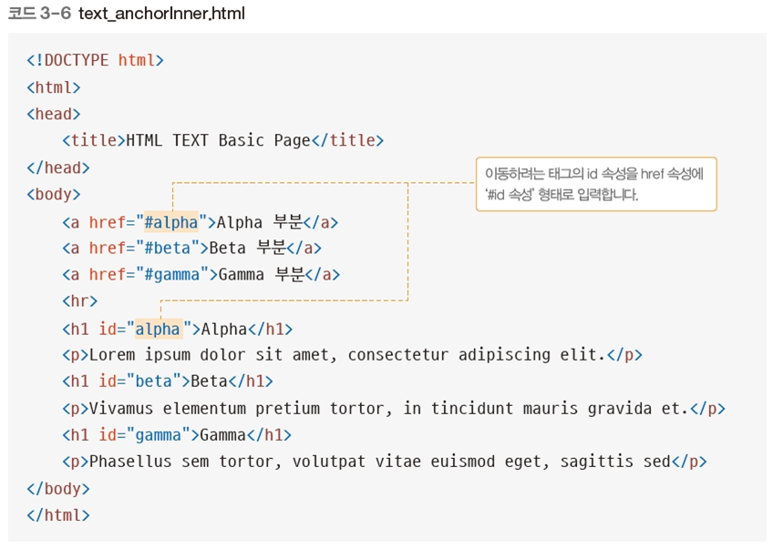
|
|
| target 속성 |
target 속성은 링크된 리소스를 어디에 표시할지를 나타내는 속성이다.
속성값으로는 _blank, _self, _parent, _top이 있다. 1. _self는 현재 화면에 표시한다는 의미로, target 속성이 선언되지 않으면 기본적으로 self와 같이 동작. 2. _blank는 새로운 창에 표시한다는 의미로 외부 페이지가 나타나게 하는 속성. 3. _parent와 _top은 프레임이라는 특정 조건에서만 동작하는 속성으로, 요즘은 프레임을 잘 쓰지 않기 때문에 자주 사용되지는 않는다. |
콘텐츠나 레이아웃에 아무런 영향도 주지 않고, 단지 다른 요소 여럿을 묶어 관리하기 편하게 만드는 역할을 하는 태그를 ‘컨테이너 태그’라고 한다. 컨테이너는 콘텐츠의 내용(영역)을 구분할 때 주로 사용된다.
| <div> | 블록 레벨의 컨테이너 요소를 만드는 태그 |
|---|---|
| <span> |
인라인 레벨의 컨테이너를 만드는 태그 블록 레벨 요소의 내부에서 콘텐츠를 영역 별로, 또는 목적 별로 구분하는 역할을 하기도 하고, CSS를 통한 스타일 적용을 위해 사용되기도 한다. |
이미지 개체를 삽입할 때 사용하며 src는 필수 속성이다.
| <img> |
이미지 확장자 : jpg(사진), png(투명배경), gif(단순이미지, 움직이는그림),svg 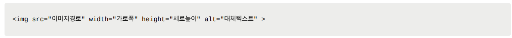 |
|---|---|
| 절대경로 vs 상대경로 |
상대경로(상대주소) : 현재 html문서의 위치를 기준으로 파일의 위치경로를 지정하는 방식. 작성하는 html 문서를 기준으로 같은 선상에 있는 경우에는 폴더명을 바로 작성하거나 ./로 사용할 수 있다. (images와 ./images는 같은 의미) 탐색기에서 html 파일을 클릭해서 보는 경우에도 문제없이 잘 보임. |
|
절대경로(절대주소) : 웹에 업로드된 이미지 파일의 경로. (절대경로)는 슬래시(/)로 시작한다. 절대 경로는 서버환경에서만 정상적으로 작동함. 비주얼스튜디오코드 실시간 미리보기를 하는 경우 주소표시줄을 보면 http://127.0.0.1:5500/index.html 이렇게 가상 호스트를 알아서 구성해 보여준다. 그래서 실시간 미리보기 상태에서는 절대 주소로 해도 경로가 문제가 없지만 탐색기에서 html 파일을 열면 서버 환경이 아닌 오프라인 상태에서 파일을 여는 것이기 때문에 파일 경로를 인식하지 못해서 이미지 및 css 적용 등이 제대로 작동하지 않는다. 경로가 맞지 않는 이미지의 경우 엑박이 뜬다. (*엑박: 사람들이 인터넷 사이트에 접속했지만 해당 웹사이트에 게재되어 있는 이미지가 정상적으로 화면에 업로드 되지 않아서 생기는 x 표시를 말함.) |
|
| 둘 중에 무엇을 써야 하나? |
현실적으로 html 파일을 탐색기에서 열기 위한 목적이 아니고 온라인에서 보여주는 게 목적인 경우가 대부분이라 상대경로를 사용하는 경우가 드물다. 절대주소로 하는 대표적인 장점은 html 파일의 위치를 기준으로 상대적으로 정해지는 경로가 아닌 절대적인 경로이기 때문에 이미지가 포함된 html 위치가 변경되어도 이미지 및 링크가 어긋나지 않는다는 것이다. 그에 반해 상대주소로 한 경우 이미지가 포함된 html 위치가 변경되면 이미지 경로도 그것에 맞게 일일이 바꿔주어야 하는 불편함이 있다. *개발자와 html을 공유해야 하는 경우는 html, css, js, 이미지 등 모든 링크되는 파일들은 되도록이면 절대 주소로 사용하고 그렇지 않은 경우는 상대주소로 해도 무방함. |
| 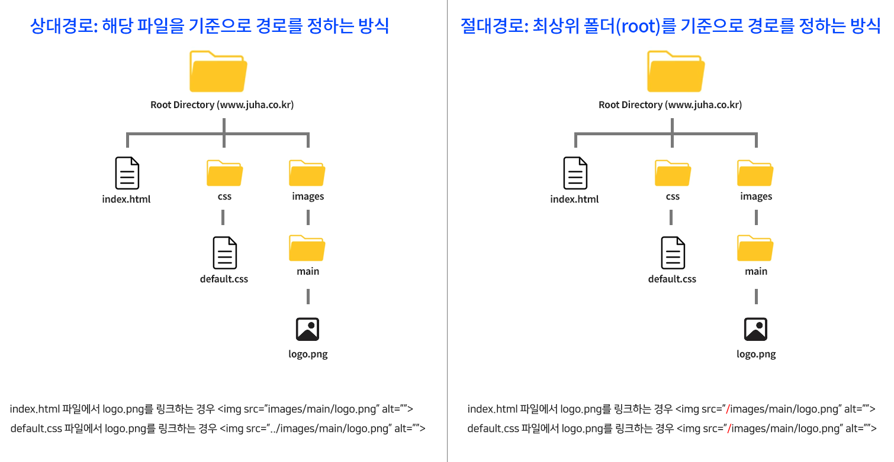 | |
| 대체 텍스트 추가하기 (alt 속성) |
img 태그의 alt 속성은 이미지의 대체 텍스트를 입력하는 속성이다. 대체 텍스트란 이미지가 아직 로드되지 않았거나 이미지 로드에 실패한 경우 이미지를 대신해 표시될 텍스트를 말한다. (필수 속성임.) |
| 말풍선 효과 (title 속성) | title : 이미지의 제목 역할, 이미지 위에 마우스를 올리면 설명이 뜨는 말풍선 효과를 지님, 필수속성은 아님. |
| 이미지 설명글 |
HTML5이전에는 이미지에 자막(설명글)을 추가하기 위해 img 태그와 별개의 텍스트 태그를 사용해서 구현하였는데 HTML5에서는 이미지를 비롯해 오디오, 비디오 등의 독립적인
콘텐츠에 자막을 추가해 표시할 수 있는 <figure>와 <figcaption> 태그가 추가되었다. 자막을 담당하는 <figcaption> 태그와 콘텐츠(이미지)태그가 <figure> 태그에 포함되는 방식으로 사용된다. |
| <figure> & <figcaption> | 이미지, 오디오, 비디오 등의 독립적인 콘텐츠에 자막을 추가해 표시할 수 있는 태그 |
| 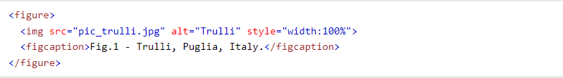 | |
| <picture> |
<picture> 태그 또한 이미지 소스를 감싸는 역할을 한다. 그리고 그 안에는 여러 개의 <source>태그를 사용해 화면 크기 별로 사용할 수 있는 여러
개의 이미지를 포함시킬 수 있다. <picture> 태그는 HTML5에 추가된 태그이므로 오래된 브라우저에서 사용이 불가한 경우가 발생할 수 있기 때문에 태그 내부에 <source>가 아닌 <img> 태그를 추가해 준다. 그렇게 하면 오래된 브라우저는 <picture> 와 <source>를 무시하고 <img> 태그에 작성된 내용을 토대로 이미지를 표시해준다. 모든 <source>의 media 조건이 맞지 않을 때에도 브라우저는 <img> 태그의 내용을 토대로 이미지를 표시할 수 있기에 <picture> 태그에는 항상 <img> 태그를 하나씩 추가해 주는 것이 좋다. |
|
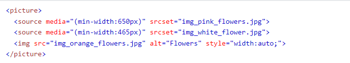 하나의 <picture> 태그의 안에 세 개의 <source> 태그를 포함하면, 결과가 렌더링되는 화면의 크기에 따라 세 이미지 중 하나의 이미지 만이 선택되어 화면에 표시된다. <source> 태그의 media 속성은 화면 크기에 대한 조건을 지정할 수 있는 속성으로, 여기에 쓰인 max-width(min-width)란 '최대 크기(최소 크기)'를 의미한다. |
|
| 이미지맵 |
HTML에서는 <map>태그를 이용하여 이미지 맵(image map)을 제작할 수 있다. 이미지 맵(image map)이란 이미지의 일부를 클릭할 수 있도록 만들어서 버튼처럼 사용하는 기능을 의미한다. 이미지의 일부분에 링크를 연결. 이미지에 usemap속성으로 이름선언. 각각의 영역선언 area에서 링크영역지정 <map>태그는 하나 이상의 <area>태그를 가지며, 이 <area>태그가 바로 버튼과 같은 역할을 한다. 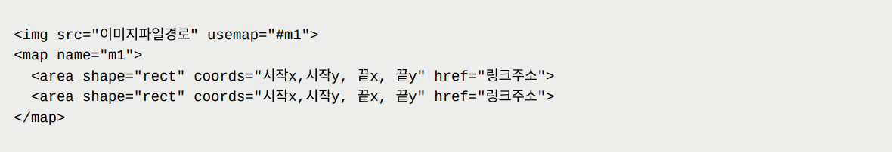 http://maschek.hu/imagemap/imgmap/ 이미지맵 좌표값 구하기 |
| <audio> |
오디오를 표시하는 태그. <audio> 태그는 다음 속성들과 함께 사용할 수 있다. 속성값을 지정하지 않고 속성명만 기입하는 방식으로 사용할 수 있는 '불리언(boolean) 속성'이 주로 사용된다. *불리언 속성은 해당 속성을 명시하지 않으면 속성값이 자동으로 false 값을 가지게 되며, 명시하면 자동으로 true 값을 가지게 됨. HTML5 오디오 파일 형식: HTML5 표준이 공식적으로 지원하는 오디오 파일 형식은 MP3, Wav, Ogg - MP3 : Moving Picture Experts Group에 의해 개발되었으며, MPEG-1의 오디오 규격으로 개발된 손실 압축형 파일 형식. - WAV(웨이브) : IBM과 Microsoft에 의해 개발되었으며, 개인용 PC에서 오디오를 재생하기 위한 IBM과 Microsoft의 표준 오디오 파일 형식. - Ogg(오그) : Xiph(자이프) 재단에 의해 개발되었으며, MP3의 대안으로 개발된 특허권으로 보호되지 않는 개방형 공개 멀티미디어 파일 형식. HTML5 audio 요소
HTML5 audio 속성
|
||||||||||||||||||||||||||||
|---|---|---|---|---|---|---|---|---|---|---|---|---|---|---|---|---|---|---|---|---|---|---|---|---|---|---|---|---|---|
| <video> |
비디오를 표시하는 방법. HTML5 표준이 공식적으로 지원하는 비디오 파일 형식은 MP4, WebM, OGV. - MP4 : Moving Picture Experts Group에 의해 개발되었으며, 비디오 코덱으로는 H.268, 오디오 코덱으로는 ACC를 사용한다. 적은 용량으로도 고품질의 영상 및 음성을 구현할 수 있어 인터넷을 통한 스트리밍에 많이 활용되는 파일 형식. - WebM : 구글의 지원으로 개발된 개방형 공개 멀티미디어 파일 형식이며, 비디오 코덱으로는 VP8, 오디오 코덱으로는 Vorbis를 사용한다. - OGV : Theora(테오라) Ogg라고도 불리며, Xiph 재단에 의해 MP3의 대안으로 개발된 특허권으로 보호되지 않는 개방형 공개 멀티미디어 파일 형식. 비디오 코덱으로는 Theora, 오디오 코덱으로는 Vorbis를 사용한다. HTML5 video 요소
HTML5 video 속성
|
|
iframe이란 inline frame의 약자. iframe 요소를 이용하면 해당 웹 페이지 안에 어떠한 제한 없이 또 다른 하나의 웹 페이지를 삽입할 수 있다. <iframe>의 src 속성에는 삽입하고자 하는 웹문서의 URL을 입력 한다. width, height 값 적용 가능 allowfullscreen 속성은 iframe 영역에 대해서 전체회면을 허용할 것인지에 대한 선언임. 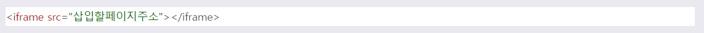 |
|
|
1. 유투브 영상 삽입 2. 지도 넣기 (구글) |
목록(list)이란, 연관 있는 항목들을 정돈된 형태로 나열한 것을 말한다.
HTML에서 목록을 나타내는 태그로는 <ul> <ol> <dl>이 있다.
각각 '순서 없는 목록'과 '순서 있는 목록', '정의형 목록'을 나타낸다.
| <ul> <li> |
1. 비순서형 목록 리스트(unordered list). 불릿 기호가 목록앞에 표시됨 2. 순서가 없는 리스트는 <ul>태그로 시작하며, 여기에 포함되는 각각의 리스트 요소는 <li> (list item)태그로 시작한다. 3. 각각의 리스트 요소 앞에는 기본 마커(marker)로 검정색의 작은 원(bullet)이 위치함. CSS의 list-style-type 속성을 사용하면 리스트 요소 앞에 위치하는 마커(marker)를 다른 모양으로 변경할 수 있다. - disc : 검정색 작은 원 모양 (기본설정) - circle : 검은 테두리의 작은 원 모양 - square : 사각형 모양 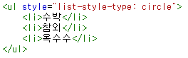 |
|---|---|
| <ol> <li> |
1. 순서형 목록리스트(ordered list). 순서형식을 아라비아숫자, 로마자, 알파벳으로 표시한다. 2. 순서가 있는 리스트는 <ol>태그로 시작하며, 여기에 포함되는 각각의 리스트 요소는 <li> 태그로 시작한다. 3. 각각의 리스트 요소 앞에는 기본 마커로 아라비아 숫자가 위치함. CSS의 list-style-type 속성을 사용하면 리스트 요소 앞에 위치하는 마커(marker)를 다른 모양으로 변경할 수 있다. - decimal : 숫자 (기본설정) - upper-alpha : 영문 대문자 - lower-alpha : 영문 소문자 - upper-roman : 로마 숫자 대문자 - lower-roman : 로마 숫자 소문자 |
| ul태그와 ol태그는 모두 동일한 리스트 항목 태그인 li를 사용한다. | |
| <dl> <dt> <dd> |
정의 리스트(Definition List)는 용어와 그에 대한 정의를 모아놓은 리스트로 <dl>태그로 시작한다. <dt>태그(Definition Term)에는 정의할 용어의 이름(제목)이 들어가고, <dd>태그(Definition Description)에는 해당 용어에 대한 정의(설명)가 들어간다. 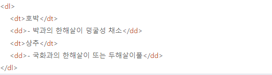 |
| dt, dd는 dl없이 단독으로 사용될 수 없으며 하나이상의 dt와 하나 이상의 dd가 무조건 사용되어야 한다. (여러 개의 dt와 하나의 dd, 하나의 dt와 여러 개의 dd 가능) | |
| 테이블(Table)이란 여러 종류의 데이터(data)를 보기 좋게 정리하여 보여주는 표를 의미. 표 요소는 구조상 행(row)과 열(column)로 이루어져 있고, 행과 열이 만나는 지점인 셀(cell)이 하나의 항목을 나타내는 역할을 한다. | |
| <table> | 하나의 표를 나타내는 태그 |
|---|---|
| <tr> | 표 안에서 하나의 행을 나타내는 태그 |
| <th> | 행 안에서 제목에 해당하는 셀을 나타내는 태그 |
| <td> | 행 안에서 항목에 해당하는 셀을 나태는 태그 |
| 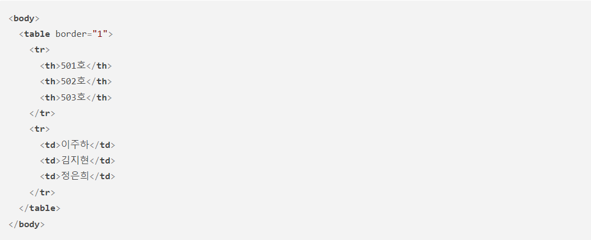 | |
| <caption> |
<caption> 태그는 <table> 태그의 안 쪽에서 제목 또는 표에 대한 설명을 나타내는 역할을 한다. 이 태그의 콘텐츠는 표의 길이를 기준으로 가운데 정렬이 된다. <caption> 태그의 안에 다른 태그를 포함해 제목이나 설명글을 꾸며줄 수 있다. |
| 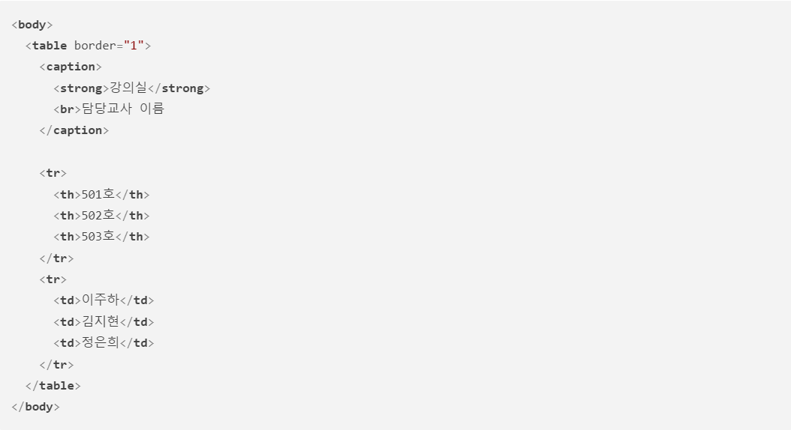 | |
| <thead>,<tbody>,<tfoot> |
표 구조 정의하기. 1.<thead> : 표의 제목 부분 2.<tbody> : 표의 본문 부분 3.<tfoot> : 표의 요약 부분 |
| <rowspan> | <td>태그에서 가로행 병합 |
| <colspan> | <td>태그에서 세로열 병합 |
| <colgroup> |
표의 열을 묶는 그룹을 정의한다. 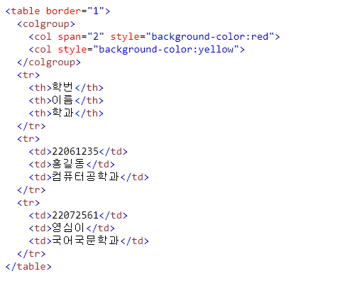" |
|
웹 이용자가 입력 요소에 입력한 값들을 서버로 전송해주는 역할을 하는 '폼 요소(양식)'를 만드는 태그. form 요소를 사용하여 사용자로부터 데이터를 입력 받을 수 있고 사용자가 입력한 데이터를 서버로 보낼 때에도 form 요소를 사용한다. |
|
| 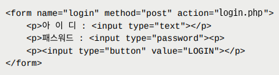 | |
| action 속성 |
action 속성은 입력받은 데이터를 처리할 서버의 프로그램을 지정한다. 서버프로그램으로는 CGI, PHP, ASP 등이 있다. |
|---|---|
| method 속성 |
입력받은 데이터를 서버에 전달할 방식을 명시. method 속성을 통해 명시할 수 있는 form 요소의 전달 방식은 GET 방식과 POST 방식으로 나눠진다. 1. GET 방식은 주소에 데이터(data)를 추가하여 전달하는 방식. 데이터가 주소 입력창에 그대로 나타나며, 전송할 수 있는 데이터의 크기 또한 제한적이다. 검색 엔진의 쿼리(query)와 같이 크기가 작고 중요도가 낮은 정보를 보낼 때 주로 사용한다. 2. POST 방식은 데이터(data)를 별도로 첨부하여 전달하는 방식입. 데이터가 외부에 드러나지 않으며, 전송할 수 있는 데이터의 크기 또한 제한이 없다. 로그인, 회원가입처럼 보안이 중요한 경우에 주로 사용한다. |
| name 속성 | 하나의 웹 문서안에 여러 개의 폼이 있을 수 있으므로 폼을 식별하기 위해 폼의 이름을 지정할 수 있다. |
| 요약하면, 사용자가 form 요소를 통해 입력한 데이터는 action 속성에 명시된 위치로 method 속성의 방식을 통해 전달된다. | |
| fieldset, legend 태그 |
관련된 입력 양식들을 그룹화할 때 사용 (폼 요소를 그룹으로 묶을 때 사용함.) fieldset 태그는 하나의 그룹으로 묶은 요소들 주변으로 박스 모양의 선을 그려줌. legend태그는 fieldset 태그의 제목을 정의할 때 사용함. (fieldset 태그 내에서 사용되야 함.) |
| <input> 태그는 웹 페이지 이용자로부터 입력을 받기 위해 사용하는 태그 중 가장 대표적인 태그 | |
| type 속성 | <input> 태그의 기본 형태는 텍스트를 입력할 수 있는 대화형 필드이지만, <input> 태그의 type 속성을 활용하면 보다 다양한 형태의 입력 요소를 만들 수 있다. |
|---|---|
| type의 종류 | |
| type="text" |
text 유형은 한 줄 짜리 일반 텍스트를 입력할 수 있는 유형. <input> 요소의 기본 유형으로, 따로 type 속성을 지정하지 않은 경우에도 사용할 수 있는 유형이다. 주로 아이디, 이름, 주소, 전화번호 등 단순한 텍스트를 입력할 때 사용. |
| type="password" |
사용자로부터 비밀번호를 입력받을 수 있다. 비밀번호를 입력받기 때문에 화면에는 입력받은 문자나 숫자 대신 별표나 작은 원 모양이 표시된다. |
| type="radio" |
사용자로부터 여러 개의 옵션(option) 중에서 단 하나의 옵션만을 입력받을 수 있다. 서버로 정확한 입력을 전송하기 위해서는 반드시 모든 input 요소의 name 속성이 같아야 한다. checked 속성을 이용하여 여러 개의 옵션 중에서 처음에 미리 선택되는 옵션을 지정할 수 있다. 다중선택이 불가능함. |
| type="checkbox" |
사용자로부터 여러 개의 옵션 중에서 다수의 옵션을 입력받을 수 있다.(다중선택 가능) 서버로 정확한 입력을 전송하기 위해서는 반드시 모든 input 요소의 name 속성이 같아야 한다. |
| type="submit" |
전송버튼 value 속성으로 버튼에 표시되는 텍스트를 지정함. |
| type="reset" |
초기화 버튼 value 속성으로 버튼에 표시되는 텍스트를 지정함. |
| type="button" |
버튼 value 속성으로 버튼에 표시되는 텍스트를 지정함. |
| type="image" |
이미지 버튼 alt 속성 반드시 지정해야 함. |
| type="file" |
사용자로부터 파일을 전송받을 수 있다. 서버로 정확한 입력을 전송하기 위해서는 반드시 모든 input 요소의 name 속성이 같아야 한다. |
| type="email" | 사용자가 email 주소를 입력할 수 있도록 해줌. |
| type="url" | 사용자가 URL 주소를 입력할 수 있도록 해줌. |
| type="tel" | 사용자가 전화번호 입력할 수 있도록 해줌. |
| type="search" |
사용자가 검색어를 입력할 수 있다. 일반 text 타입과 다른 점은 입력 필드에 검색어를 입력하면, 입력 필드 우측에 입력된 검색어를 바로 삭제할 수 있는 엑스(X) 표시가 생김. |
| type="number" |
숫자를 입력받을 때 사용한다. 입력 필드에 직접 숫자를 입력하거나 증감 버튼을 클릭해 숫자를 선택할 수도 있다. min과 max를 사용해 수치의 최소값과 최대값을 각각 지정할 수 있다. value값을 통해 초기값을 설정할 수 있음. (특별한 경우를 제외하고 대부분의 input type에 value속성 사용 가능) |
| type="range" |
사용자가 일정 범위 안의 값만을 입력할 수 있도록 해줌. 값을 선택하기 위한 수평바(슬라이드 막대)로 표현된다. min과 max를 사용해 수치의 최소값과 최대값을 각각 지정할 수 있다. 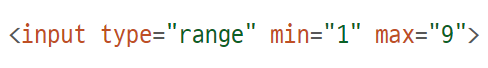 |
| type="color" |
사용자가 색상을 입력할 수 있도록 해줌. |
| type="date" |
사용자가 날짜를 입력할 수 있도록 해줌. min과 max를 사용해 날짜 선택에 제한값을 설정할 수도 있다. 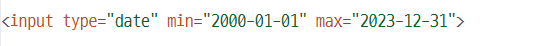 |
| type="time" | 사용자가 시간을 입력할 수 있도록 해줌. |
| type="datetime-local" | 사용자가 날짜와 시간을 입력할 수 있도록 해줌. |
| type="month" | 사용자가 연도와 월을 입력할 수 있도록 해줌. |
| type="week" | 사용자가 연도와 몇 번째 주인지를 입력할 수 있도록 해줌. |
| 속성명 | 설명 |
|---|---|
| placeholder |
사용자에게 입력하는 값의 양식에 대한 힌트를 제공해주는 속성 (주로 input, textarea태그에 사용) placeholder 속성이 제대로 동작하는 input 요소의 type 속성값은 다음과 같습니다. - email, password, search, tel, text, url |
| required |
필수 필드 지정하기 required 속성이 적용된 입력 요소에 내용이 비어있을 경우 경고 메시지를 표시해 주는 속성. 필수적으로 입력해야 하는 내용에 속성 지정하면 됨. |
| autocomplete (form 태그 속성으로 한번에 선언가능) |
자동완성기능 (autocomplete="on or off") : on 이 기본값 on으로 설정하면 사용자가 이전에 입력했던 값들을 기반으로 사용자가 입력한 값과 비슷한 값들을 드롭다운 옵션으로 보여준다. autocomplete 속성이 제대로 동작하는 input 요소의 type 속성값: color, datepickers, email, password, range, search, tel, text |
| autofocus | 입력 커서 표시하기. |
| readonly |
읽기 전용 속성으로 입력창의 내용을 변경할 수 없게끔 읽기 전용으로 만들 때 사용함. input/textarea 태그에서 사용 가능 |
| disabled | 해당 input 요소가 비활성화됨을 명시 |
|
폼 요소에 레이블을 붙이기 위한 용도로 사용함. 폼 요소와 레이블 텍스트가 서로 연결되어 있다는 것을 알 수 있음. (조건:입력요소 id값과 label for값 일치해야 함) |
|
| 적용방법 |
label 태그 안에 입력 요소를 포함시키는 방식 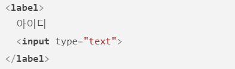 |
|---|---|
|
입력 요소의 id를 기반으로 label 태그와 입력 요소를 짝을 지어주는 방식 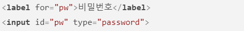 |
|
|
<select> 태그는 여러 가지 항목 중 원하는 항목을 선택할 수 있도록 '드롭다운 메뉴'를 제공하는 태그. 옵션들을 묶는 역할을 하는 태그 *드롭다운 메뉴란, 요소를 클릭했을 때 선택 가능한 항목들이 아래로 펼쳐지는 메뉴를 말한다. <select> 태그는 드롭다운 메뉴의 개별 항목을 나타내는 <option> 태그와 함께 사용한다. option태그는 항목들을 표시하는 태그. |
|
| select 태그에 사용되는 속성 | 1. size : 화면에 표시될 메뉴 항목의 개수를 지정 |
|---|---|
| 2. multiple : 여러 개의 항목을 함께 선택할 수 있도록 한다. 브라우저에 여러 개의 옵션이 함께 표시되면서 ctrl키를 누른 상태로 드롭다운 메뉴에 있는 여러 항목을 선택할 수 있다. 선택 후 전송버튼을 클릭하면 서버로 전송됨. | |
| option 태그에 사용되는 속성 | 1. value : 옵션을 선택했을 때 서버로 넘겨질 값을 지정. (외부 링크를 걸 때 value값에 url입력) |
| 2. selected : 화면에 표시 될 때 기본으로 선택되어 있는 옵션을 지정.(하나의 항목에만 지정) | |
| <optgroup> | 드롭다운 메뉴에서 여러 항목들을 (몇 가지) 그룹으로 묶어야 할 경우에 사용함. |
| 사용자가 여러 줄의 텍스트를 입력할 수 있는 텍스트 입력 영역을 정의할 때 사용 | |
| textarea 태그에 사용되는 속성 | 1. cols : 텍스트 영역의 가로 너비를 지정. 이때 수치는 문자의 개수를 기준으로 한다. |
|---|---|
| 2. rows : 텍스트 영역의 세로 너비를 지정. 기준은 cols와 동일하게 문자의 개수. | |
| 버튼을 만들 때 사용함. | |
| button 태그에 사용되는 type 속성 | 1. submit : 폼을 서버로 전송하기 (기본값) |
|---|---|
| 2. reset : 폼에 입력한 모든 내용을 초기화 시킴. | |
| 3. button : 버튼 형태만 만들 뿐 자체 기능은 없음. (다른 동작을 하려면 따로 함수를 연결해야 함) | |
|
시맨틱 태그란 '의미론적인 태그'라는 뜻. 태그 이름만으로도 해당 태그가 문서에서 어떤 역할을 하는지 쉽게 파악할 수 있는 태그를 가르킴. |
|
| 문서 구조를 위한 시맨틱 태그 | |
|---|---|
| header | 웹 페이지에 대한 대표적인 설명글 또는 머릿말 등을 나타낼 때 사용하는 태그. (header, footer태그 포함 안됨) |
| nav |
네비게이션 역할을 하는 메뉴 링크들의 영역에 사용. 사이트의 메뉴를 표시할 때 가장 많이 사용하는 태그임. |
| main |
페이지의 메인 콘텐츠(main content)를 나타낼 때 사용.(하나의 문서에 한 번만 사용) article, aside, footer, header, nav 요소의 자손 요소가 되어서는 안 된다. |
| aside |
본문 이외의 내용 표시할 때 주로 사용. 웹 페이지의 왼쪽이나 오른쪽, 혹은 하단에 사이드바로 표현됨.(주로 본문 옆에 간단하게 표시되는 사이드바를 만들거나 광고 배너 등을 포함하는 데 사용) |
| section |
여러 가지 콘텐츠들을 그룹으로 묶어주는 역할의 태그 연관된 콘텐츠를 묶어 영역을 구분하는 데 사용하는 태그로 div 태그는 내부에 포함된 요소들에 대해 아무런 정보도 나타내지 않지만, section 태그는 관련된 콘텐츠가 묶여 있음을 명시적으로 나타내는 태그. 제목태그 포함 권장 |
| article |
독립적으로 사용할 수 있는 연관 콘텐츠를 구분할 때 사용하는 태그. 제목태그 포함 권장 |
| footer |
일반적으로 웹 문서 끝자락에 들어가는 태그로 페이지를 만든 사람, 저작권 정보, 연관 링크 등을 표시하는 역할의 태그. (header, footer태그 포함 안됨) |
| address | 문서나 글의 저자 또는 회사와 연락할 수 있는 정보를 명시할 때 사용. |
| 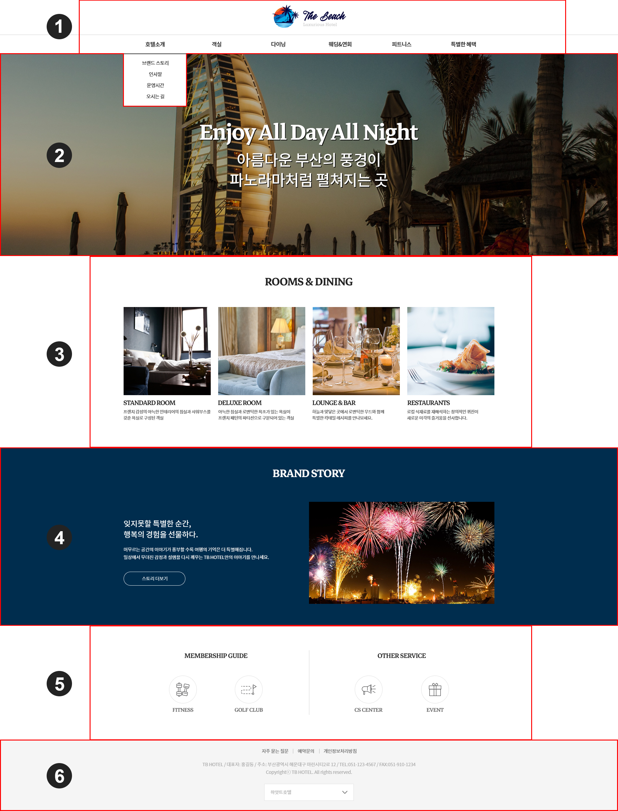 | |